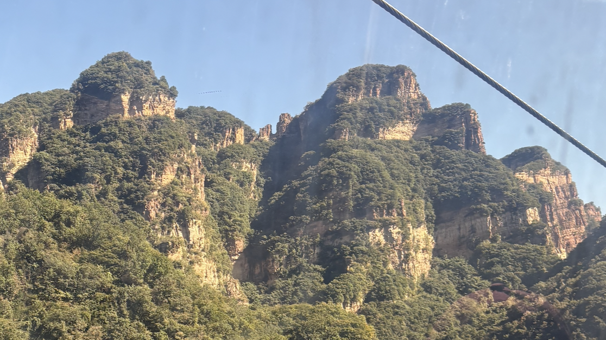
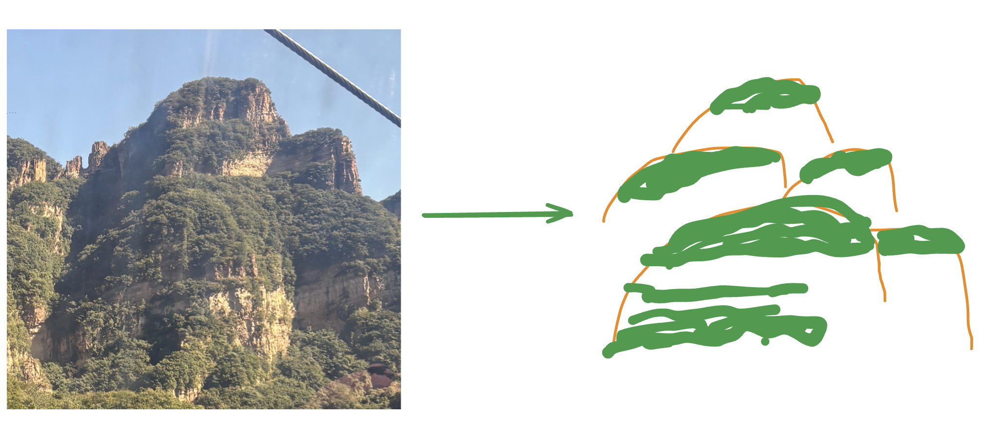
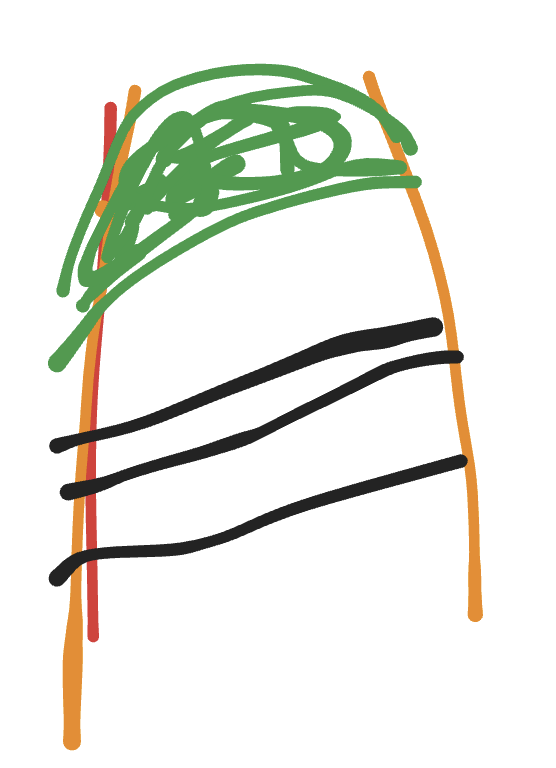
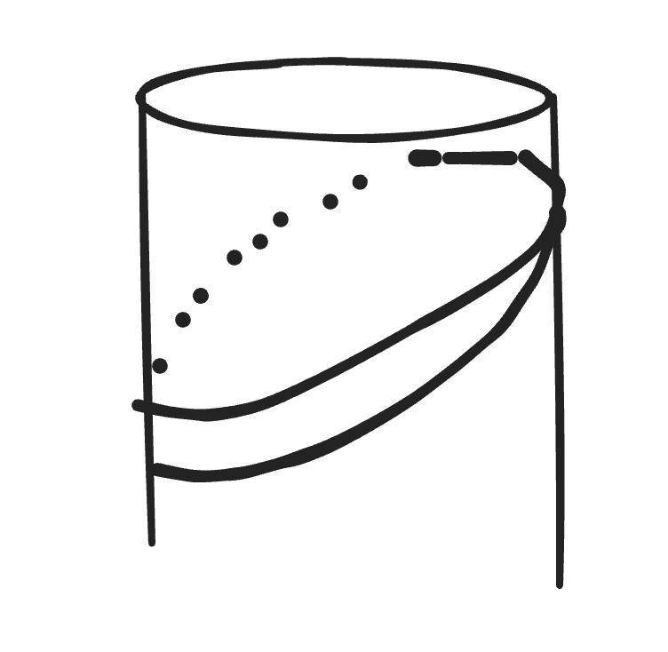
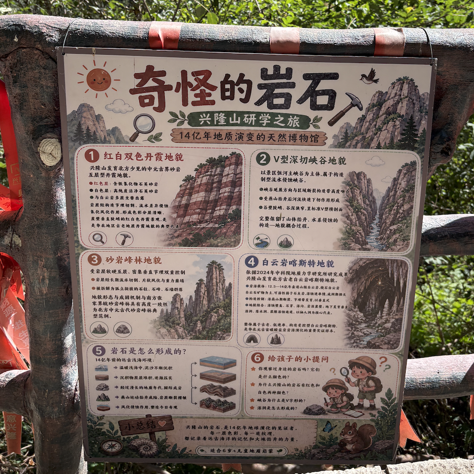

从一次看见，到《群山长存》。
创作于 2026年9月
兴隆山的红白双色丹霞与砂岩峰林，是这件作品的地貌灵感。岩层与绿意沿柱状山峰展开，在眼中形成一圈圈环绕的形态。
最初吸引我的，是一个个柱状山峰上环绕的绿色植被带。再看岩壁，层层岩层也像一个个环，绕着山峰展开。绿植和岩层之所以显出这样的形态，是因为山峰本身的形状。这就是我想把它放进 Ring 系列的原因。


先寻找柱状山峰高低错落的关系，再反复调整绿冠的轮廓：消除平切边、三角形接缝和尖角，让植被像沿着山肩自然长出来。
岩层不再是每座山各自的一套条纹，而是在相应高度彼此呼应。倾斜、弯曲、宽窄变化与风化痕迹，逐渐替代了生硬的几何色带。


植被带开始断续、错位，生长得有疏有密；远近树冠也有了不同的颗粒尺度。作品从《山有绿冠》走向《群山长存》——目光从山顶的绿，转向岩层、植物与漫长的时间。

景区标示牌以“14亿年地质演变”介绍这里的背景。古老的是岩层的历史，并不意味着眼前的峰林从那时起就保持着今天的形状。画面借此回应地质时间，也保留了观察与想象。